Pig turns into the closeup.
SOURCE HEAD TURN NEEDS REPAIR
Six moments, fully assembled.
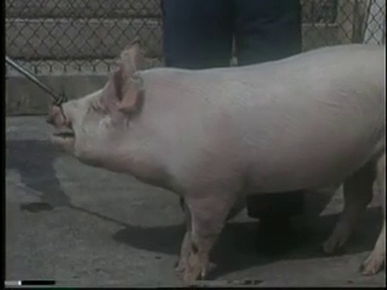

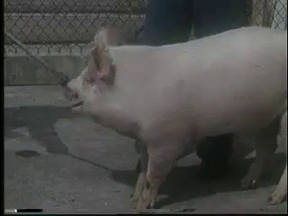
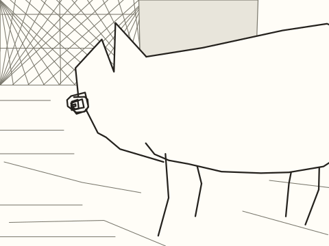
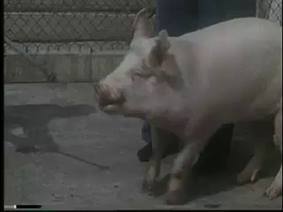
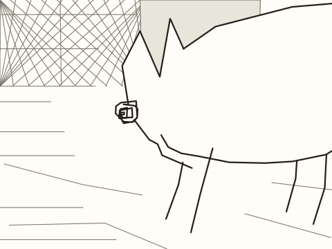
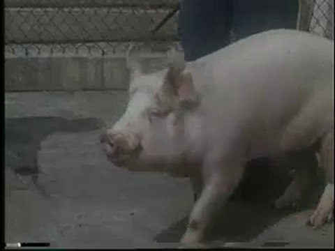
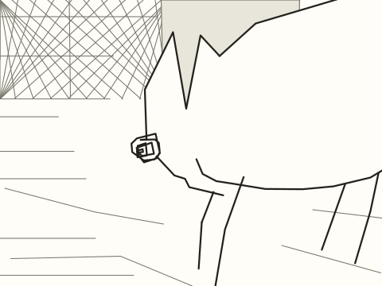
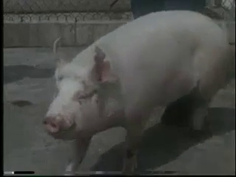
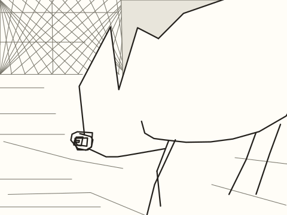
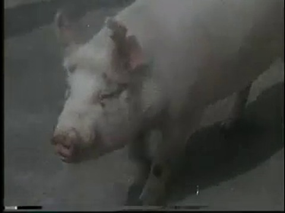
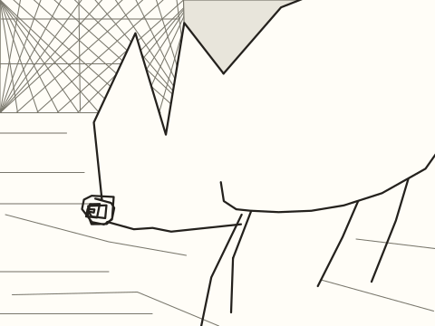
References and review
Quick, Draw! key 5298401904164864. Quick, Draw! contributors / Google Creative Lab, CC BY 4.0. Original ten doodle strokes drive the pig. The looping snout, triangular ears and spare leg marks stay in one anatomical mesh. Rump and feet retain the source crop. The fence, panel and yard were drawn once by agent.
Archive: Agriculture USA (), clip-relative 6.3063–8.2416 s. Archive rights were not provided in the candidate manifest.
Timeline and source anchors · Assembly checks · Measured mask fit · Character trace · Independent review · Original doodle

Source anchors are manually observed. SAM 2.1 masks are retained with provenance; the filled rig-envelope overlap uses body/head cels plus 13px limb envelopes. It is a proxy, not rendered cartoon pixel coverage or model confidence. Recognition and normal-speed playback approval remain pending. No training ran. This is not a release-approved result.